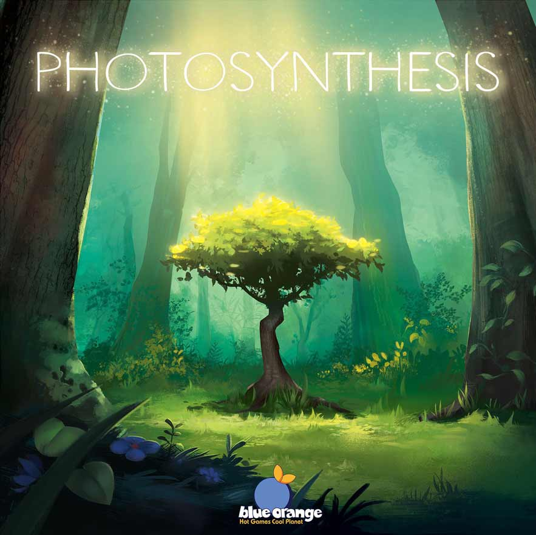
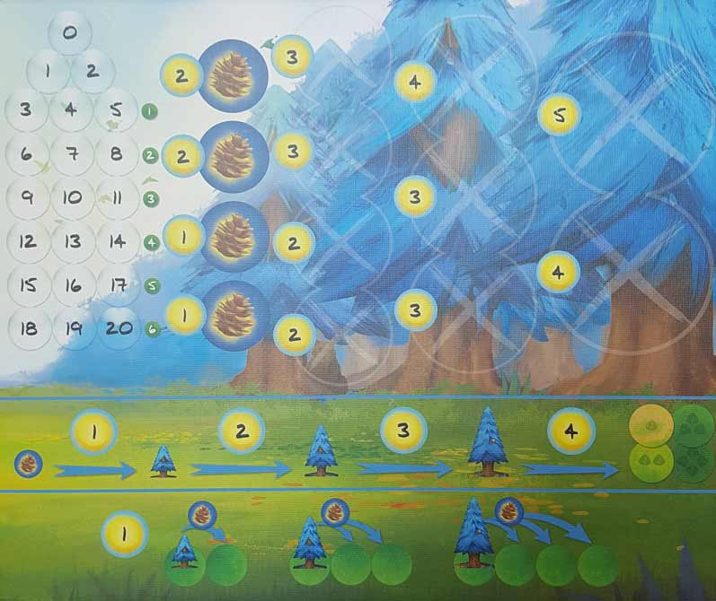
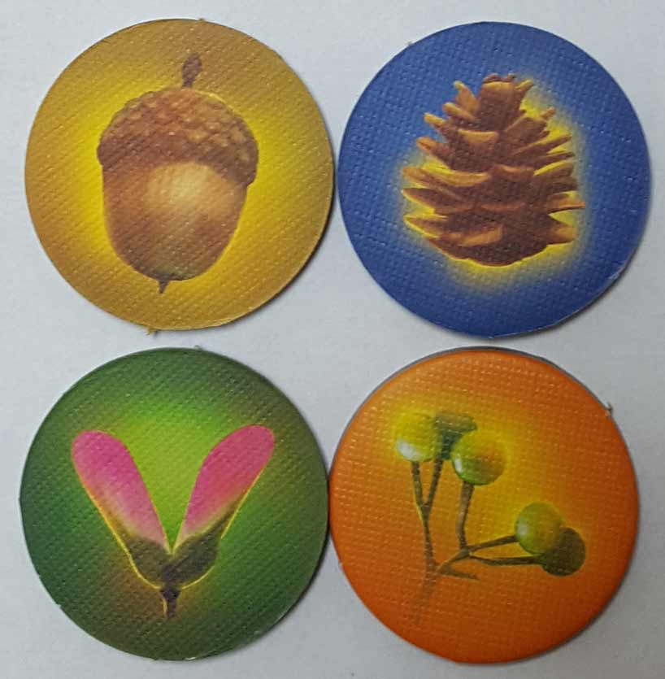
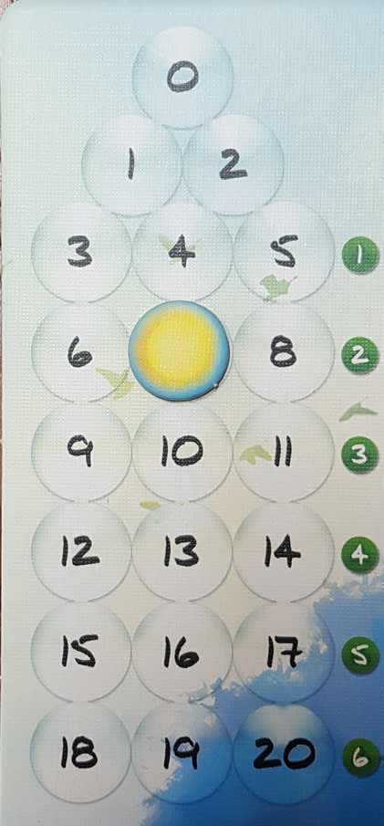
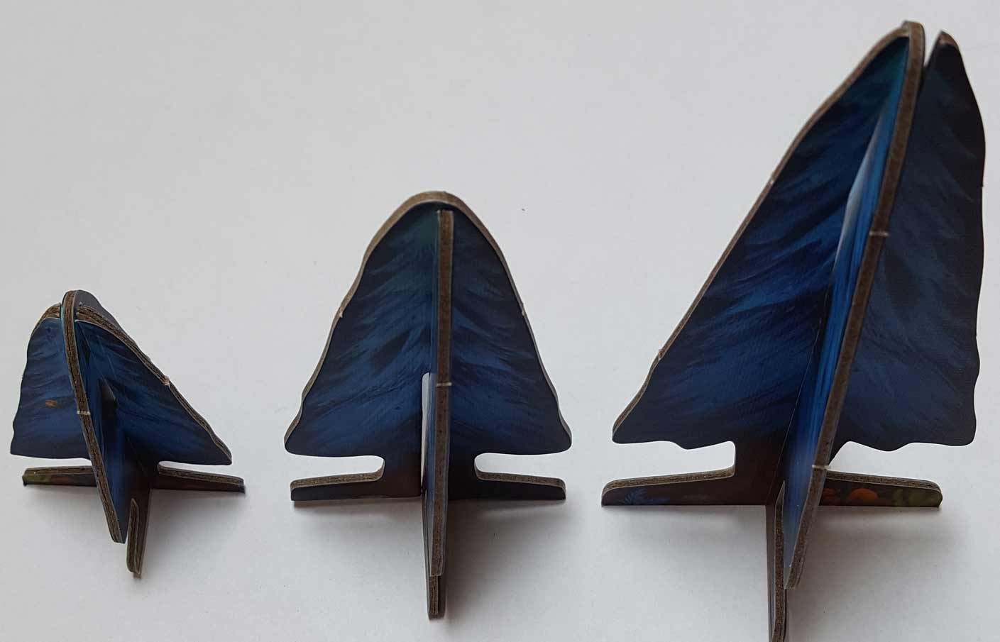
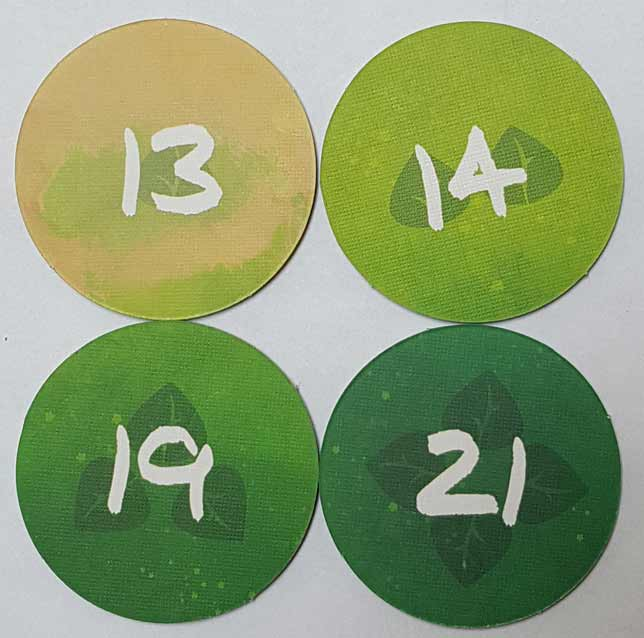
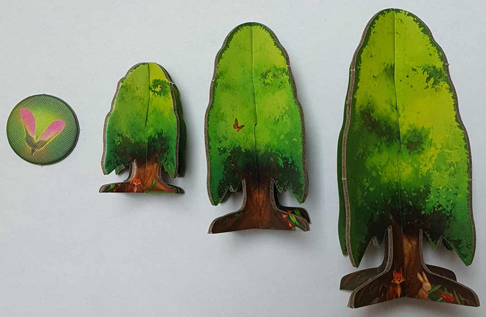

In this Photosynthesis review, the Board Crazy crew breaks down the nature-themed board game from Blue Orange Games. In this game, players compete as they grow trees from seeds to fully grown trees, and then harvest them for points. Along the way, they have to worry about the rotating sun and the shadows cast by other, taller trees. For more on Photosynthesis, a rather unique and entertaining board game, check out our review below!

D reviews Photosynthesis
 (Author’s
note: this review is meant to accompany our gameplay video and will not
go in-depth on the game’s rules. If you’re interested in learning how
the game is played, please watch the video. It’s not bad.)
(Author’s
note: this review is meant to accompany our gameplay video and will not
go in-depth on the game’s rules. If you’re interested in learning how
the game is played, please watch the video. It’s not bad.)
When we started Board Crazy a little over a year ago, one of the main reasons we had for pursuing this endeavor was that it would give us an excuse to play board games on a regular basis. It’s a hobby that we’ve all enjoyed for most of our lives, but it’s not always the easiest one to fit into a busy schedule. Pre-planned gaming sessions would happen occasionally, as would spur-of-the-moment ones, but a commonality was that we’d generally favor games that we were already familiar with. Learning new games isn’t too difficult, but it’s just a matter of convenience. Likewise, buying new board games can be a questionable proposition when you’re not quite certain if and when you’ll ever get to play them. So, if nothing else, doing Board Crazy has been a great way for the three of us to play a bunch of games that we’d probably never have played otherwise, and I’ve enjoyed a great number of them. And one of the biggest lessons I’ve learned from playing new games more regularly is that you should always leave your expectations at the door, as things will rarely play out quite how you expect.
Photosynthesis is, as you’ve probably surmised, a good example of this. After reading the rulebook, I was worried. The standard game is played over eighteen rounds (a total that is quite a bit more than most games with a set limit) and players can perform several different actions on their turn, the number of which is only limited by how many light points they have. And while the playtime is listed on the box as 30-60 minutes, in my experience those estimates are usually quite liberal (although that may have more to do with whom I am playing…). Needless to say, I was expecting something more akin to a two hour slog than a half-hour frolic. So imagine my surprise when, after all was said-and-done, I actually came away from Photosynthesis thinking that game was a little bit too short.
This isn’t the first time we’ve played a game that I felt could benefit from a bit more breadth. For example, I thought Inis suffered a bit from ending just as things were starting to get really interesting. Photosynthesis fortunately doesn’t have that issue, as things get interesting within the first revolution of the sun around the board. Rather, I feel like this game’s self-imposed time limit makes the end of the game rather awkward, and if you’ve watched our video, you should have an idea of what I mean. There’s only one way to score meaningful points in this game, but the (completely logical) rules in place prevent you from doing anything too quickly. It’s a major bummer when a player realizes that there’s nothing they can do to win the game when there are four or five rounds left to play. That’s not fun for anyone, even the winner.
In my last review, I criticized the game-ending condition for Century: Spice Road and suggested an alternative, and I think a similar suggestion would help Photosynthesis as well. The sun doesn’t need to be a time keeper; it already serves a vital function as the way players earn light points as it moves around the board (which, by the way, is a fantastic bit of design and probably my favorite part of the game). An alternative, like giving the players a target score to hit in order to trigger the endgame, should keep everyone a bit more involved for the duration without causing a significant increase to the playtime. And, given how close our game was, I imagine deriving reasonable targets for different player counts wouldn’t be too difficult.
Fortunately, just about everything else in Photosynthesis is done well. The game’s art, done by Sabrina Miramon, is probably the first thing everyone notices about it, and with good reason. The game looks suitably beautiful for a game about a forest, and I was pleased to discover that it looks as great in person as it does in pictures online. Just as importantly, the components are of a reasonably good quality. Cardboard can certainly be a hit-or-miss material, but the trees don’t feel cheap when you’re handling them. I would perhaps caution against letting younger or more destructive children from getting their hands on them, however. And I’ve already given praise to the sunshine mechanic, but it only works so well because all of the other rules and mechanics strike a very good balance. The light, the shadows, and the actions all work together harmoniously and make complete logical sense. The only other criticism I have is that the rulebook, which is apparently translated from French, omits a rather important detail regarding the fact that placing a seed activates both the spot it originates from and the spot where it is placed. Otherwise, most everything else is worthy of praise.
It’s a shame, then, that I cannot give Photosynthesis a stronger recommendation. It has many features that are worthy of praise, but its one flaw is a major one. Board games are, first and foremost, meant to be fun, but this game makes it far too likely that one or more players will end the game in a sour mood. And I could forgive it somewhat if it was clearly meant to be punishing, but this is otherwise a relatively light, family-friendly game and not some weird, arboreal Pandemic wannabe. So if you’re more forgiving than I am, or if you really liked what you saw in the video, or you want to try to house rule it, or you just really like trees, then give Photosynthesis a look. But if you’re on the fence, I think there are better games available that provide a similar experience.
D’s Rating: Three Stars out of Five.
Will reviews Photosynthesis
 Given Blue Orange Games’ recent track record (Kingdomino, Queendomino, etc.), I came into our playthrough of Photosynthesis with
a lot of optimism. Their games have become staples in the tabletop
industry due to their intuitiveness, creativeness, and dedication to
theme. And then there are the components, which are usually really good
with Blue Orange’s games, but seemed to been taken up a notch with Photosynthesis. So
yeah, needless to say I had some expectations coming into our first
session of this one, and now (after multiple sessions) I can gladly
state – Photosynthesis is pretty good.
Given Blue Orange Games’ recent track record (Kingdomino, Queendomino, etc.), I came into our playthrough of Photosynthesis with
a lot of optimism. Their games have become staples in the tabletop
industry due to their intuitiveness, creativeness, and dedication to
theme. And then there are the components, which are usually really good
with Blue Orange’s games, but seemed to been taken up a notch with Photosynthesis. So
yeah, needless to say I had some expectations coming into our first
session of this one, and now (after multiple sessions) I can gladly
state – Photosynthesis is pretty good.
Unsurprisingly, the components for this game are both effective and of quality build. Given this game’s theme, to grow trees utilizing sunlight, the components had to be unique, which they definitely are. There are four different kinds of trees that are colored differently, and each type of tree comes in three different sizes, representing the stages of growth. You have to construct these trees yourself, but that only involves slotting one piece of cardboard into another. A lot of games these days include components that require some tinkering in order to get them to slot together properly, but not Photosynthesis. I was definitely relieved that putting together the trees and box inserts was brief and stress-free. If I had to complain about anything component-wise, it’s that I wish the game were slightly more colorful. To me, the colors are uniformly muted and flat, which I didn’t expect from a Blue Orange game.
As for the gameplay, it’s a bit more of a mixed bag. For starters, Photosynthesis is far and away the most complicated game from Blue Orange that I’ve played. Don’t let that statement mislead you though, this game is not heavy at all; it’s just not as light as I think the components and rulebook make it seem. The reason I point this out is because I felt and still feel that the rulebook isn’t as clear as it should be. For instance, we ran into a problem when trying to figure out if you can plant and grow a seed on the same space on the same turn. When we followed the rulebook during our playtest, we allowed seeds to be planted and grown on the same turn because the rules didn’t clarify whether or not that was allowed. That didn’t feel right to me, so I consulted the BoardGameGeek forums. Eventually, I found a post from someone who talked to the designer, and it explained that you can only do one or the other, not both. Apparently, this rule may have been lost during the rulebook’s translation to English, which is understandable but not entirely inexcusable.
Then again, maybe they secretly want us to plant seeds and grow them on the same turn. After all, that would certainly speed up Photosynthesis and allow us to accomplish more over its 18 rounds of play. This brings me to my (and probably D’s and Graham’s) biggest complaint with this game: it’s too short. Primarily, you’re going to earn points by growing trees up to their largest size and then harvesting them, and the closer to the board’s center these trees are, the more points you’ll earn. The problem is that all of this takes a lot of time. Sure, the game gives you some starter trees to work with, but they can only be placed on the outer rim of the board, where points are pretty low. If you want to earn something substantial, you’ll need to plant seeds on the inner rings and grow them, but again, this will take many turns to accomplish. In a two-player game, this may not be as much of an issue, but as the player count increases, so does this problem.
On the other hand, I should commend this game for its dedication to theme, which may be unrivaled. The game is called Photosynthesis, and what you get is photosynthesis, a word that my speech impediment prevents me from saying properly. Not only is the game faithful to its theme, it’s also pretty darn entertaining. While it doesn’t last as long as it should, the gameplay is satisfyingly challenging. Keeping an eye on the sun and figuring out how to maximize your light is more fun and strategic than I thought it would be, so in that regard, I was pleasantly surprised. Earning victory points, though few and far between, is truly gratifying as well. The game also allows for plenty of player interaction, which is always nice. At any time, a player could plant a tree in your desired spot or alternatively grow a tree in front of one of yours, preventing it from getting light. When this happened to me, I was frustrated but also amused. After all, this isn’t a heavy 4X strategy game, so when sabotaging happens, it’s usually pretty hilarious.
Overall, Photosynthesis is enjoyable and well made, if not a little irksome sometimes. The game goes all in on its theme, and it really does look great when you have a forest on the board. If you’re intrigued by its look and theme alone, then I recommend picking it up and giving it a try. Even with this game’s mediocre rulebook and overly short 18 round gameplay, I still think most people will find something redeeming in it. For me, the game’s uniqueness helped me overlook some of its more noticeable flaws, and I think that should ring true for other people.
I give Photosynthesis a: B
Leave a Reply
You must be logged in to post a comment.